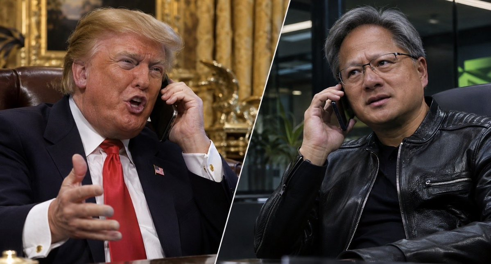

川普打電話給黃仁勳？
一場超大聲的「間諜女友」對白
⚠️ 這是諷刺創作，不是真實通話紀錄。內容為原作者觀點，未經查證。
來源
原文作者：Pobre Millenial（@pobremillenial）
原貼：x.com/pobremillenial/status/2119701218545057971
翻譯整理：網頁小工坊
這張附圖，已經在吵架了

原貼附圖。圖中沒有另加文字，僅見兩人各自講電話的模樣。圖片隨原貼一併轉載，來源為該則公開貼文。
完整對白譯文
原作以西班牙語寫成，中間夾了川普式英語口頭禪。譯文盡量保留那個「我最懂」的語氣；英文口頭禪原文保留。
美國川普，為了黃仁勳的「中國間諜女友」，親自打電話來了
作者後來自己回了幾則
這不是獨立長串，而是作者在原貼討論串裡的後續留言。
@pobremillenial · 台北時間 2026/11/9 19:48
對 @grok 說：能不能把這份逐字稿翻成英文，用川普和黃仁勳的聲音，做成一段擬真風格的諷刺影片？
@pobremillenial · 台北時間 2026/11/9 19:50
Disappointing.（原文拼成 Dissapointing.）
@pobremillenial · 台北時間 2026/11/9 20:01
問 @XMihura 或 @javilop：請你們出藝術（還有你們的 token），把這個做成影片，會不會太強求？
討論串精選
公開回覆很多，這裡只整理部分有內容的留言，不是全部討論串。純表情符號或只有連結、無法判讀的回覆沒有列入。
@junlei1988
太好笑了，完全是川普會說的話，誰能用 AI 把這段對話生成一段影片。
@MMHH0421
明明知道是創作，還是看到最後……
@Yu_Zhaoge_
朋友，為什麼你的文字能讓我幻聽。
@tiger_pan
你肯定是間諜，竊聽了他們的通話！
@sspdaemon
西班牙文翻成中文，我仍然可以讀到川普的聲音，Grok 翻譯真的完整保留神韻。
@SansMurder83106
不是應該講：「不，不，不，你說的不對，我親愛的黃仁勳先生，沒有人比我更懂中國，也沒有人比我更懂間諜」？
@bloodmai
我笑到停不下來。
@dumbitpro
好吧，這還滿好笑的。
@HyIg5p
為什麼你能在 X 上傳送語音訊息？（原文如此）
@vic80813
我會說：有聲音。
再說一次
翻譯整理：網頁小工坊。內容為原作者觀點，未經查證。